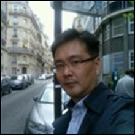

Jinhwan Kim
Birth
January 20, 1981
Affiliation
서울경제진흥원(수석)
Education
고려대학교 기술경영전문대학원 기술경영학과 박사
career
2024.06.~ 경기대학교 산업경영정보공학과 산학협력겸직교수
2022.05.~ 서울경제진흥원 창업정책팀 수석
2021.09.~2022.08. 가천대학교 경영대학원 겸임교수
January 20, 1981
서울경제진흥원(수석)
고려대학교 기술경영전문대학원 기술경영학과 박사
2024.06.~ 경기대학교 산업경영정보공학과 산학협력겸직교수
2022.05.~ 서울경제진흥원 창업정책팀 수석
2021.09.~2022.08. 가천대학교 경영대학원 겸임교수



May 2025 - Current
CTO Arsenal Inc.
January 2013 - December 2015
R&D Lab Director / PM KyungAn Cable Co., Ltd.
January 2010 - December 2013
Lead Researcher / PM S&T Dynamics Co., Ltd.
January 2008 - December 2010
Principal Researcher / PM LIG Precision Technology Co., Ltd.
January 2004 - December 2008
BiKyung Systems
January 1999 - December 2001
Samhong Engineering
1993
B.S. Electronic Engineering | JEI University